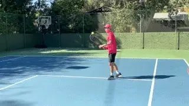

🏠 Home › Fundamentals › Footwork › ULTIMATE Movement Drills with Jeff Salzenstein
Ian Westerman (Essential Tennis)
Video Capture: ULTIMATE Movement Drills with Jeff Salzenstein — Ian Westerman (Essential Tennis)

If you ever feel clunky moving around the court and in particular transitioning up to the net and this is the video you've been looking for our friend Jeff Saul's in the scene from tennis evolution is about to break down step some offs awesome footwork patterns that you see the pros using all the time but unfortunately they're not very well utilized at your home courts so Jeff's going to go ahead and take it right away all right I'm excited to do this with.
Essential tennis this is going to be super exciting to break out how you can move efficiently to the net with your transition footwork now the big question that comes to me all the time is how do I move my feet because so much of the time we're focusing on just move your feet just move your feet but what about the house and so in singles or doubles this is a common problem that I see on wide low balls I see a lot of players run up they want to advance in the net.
They run up on their forehand side and they get on this front foot too early and they lunge at the ball and it takes their momentum off of the court well if that happens you can't get back to get ready to hit your volley and so what you want to do is you want to practice what I call the run through footwork pattern remember this is on low balls and I know you deal with them because I hear it all the time I just get killed on these low balls when you play the slicers what.
You're going to do is you're going to come up and you want to make sure that you time it so that you load off your outside leg and then when you make contact you are switching to the front foot now there's a lot that goes into it after and what I want to do is I want to bring in Megan right now who's going to demonstrate for us she is going to show us the run through footwork pattern and I'm going to start with her closer to the service line we're going to start nice and.
Slow with ball tossing I'm going to have Megan start in the middle and what we're simply going to do is practice this run through footwork pattern and every time just back up a few more steps Megan every time that she executes this shot she is going to circle around the tennis ball can and the reason being is that too often we're running off of the court or we're running straight ahead we want to make sure we circle around so that we can get in position for the volume so.
Simple ball tossing drill and she comes right off that outside leg beautiful Megan way to go now one big key and that was excellent nice going one big key is we don't want to wait on this foot too long we want to make the movement continuous and right away Megan is doing this is a absolutely critical footwork pattern for you to get down in singles and doubles on those low wide balls awesome she does it like a pro and you're going to see a lot of the.
Pros moving like this on the court they do it naturally I want you to do it naturally let's go ahead and move back to the baseline and show you how it's done from back there all right now we're back at the baseline and this is where it gets really interesting because we're building on the previous progression it's going to get more difficult you're going to feel more stress and remember this is for singles or doubles that low wide forehand that you're having a hard time.
Dealing with where you're pushing off your front foot now we're going off the outside leg for that run through Megan's going to show us right now again for me when I teach this we're not stopping when the ball is hit we're continuing to move through that's transition footwork that's getting you to feel comfortable moving to the net in a very effortless way so Megan's going to go for it right here super low ball and then she's back and around we want her to make that.
Circular motion with her footwork this is amazing the way that she's doing it excellent job well do one more notice how she moves smoothly around the ball excuse me smoothly around the tennis ball can one more excellent that was the best one yet just a little bit of practice she starts to feel better with that Megan tell me how that feels to you what do you notice so I think it's really important to really get that to where your load hit and transferring really.
Quickly sorry kind of breath huh um but because I think a lot of people get stuck like you said load and then you're like hitting and then it's not smooth so I think it's really good to practice that we did first off where your outside foot and then you continue to move through it you don't stop after you work while you're working on this oh my gosh breathing sorry you don't stop so you don't go here hit and then stop you.
Actually moving around the cone like Jeff was talking about and that's a big thing that I see players are watching where the ball goes after they made contact they don't keep moving and I like getting players to the spot afterwards so that's part of this movement pattern once you get this down on this side of the net then you can go with ball feeds you can start integrating it into approach shot games and again it's a wonderful footwork.
Pattern for you to develop now next I want to show you a more advanced footwork pattern that the pros are using when the ball is higher it's in the same position of the court it's called the outside hop and Kevin's going to come in next to help me with that all right Kevin's about to come in to show the outside hop footwork pattern and this is actually a footwork pattern that I learned by studying video so the importance of video learning it's absolutely essential and I learned it by.
Watching the pros Pete Sampras at Wimbledon he would come up on the not actually the low ball that was in the strike zone he would actually come up and hop off his outside leg and land on his outside leg over here and so that's different than the run through footwork pattern we just showed you go from this leg and you transfer the weight and you land on this foot the difference is that on the run through the balls really low so.
We were running through like this now the ball is higher so you have to lift up off the ground you have to load the outside leg and that's why they're different it's the height of the ball that determines the footwork pattern so let's go ahead and bring Kevin in right now just to start with the progression we're going to start in no-man's land or in the transition area of the court depending on what you call it and what he's going to do is he's going to practice.
Skipping off of the outside leg and landing outs on the outside leg I want him to do it the correct way first awesome so you'll notice that when he went off this outside leg this foot came in front now when I show this to players they go off the outside leg and they actually bring this foot back in their head goes forward Kevin do your best demonstration of the wrong way police yes so that was a great exaggerated outside hop the wrong way thank you for that Kevin and again the.
Focus is on developing rhythm being able to have that dynamic movement as you move through the ball so now we're going to do it the right way again remember this is the ball that's in your strike zone as the ball drops we're not going to jump anymore when the balls in your strike zone that's when you're going to lift off of the outside foot good now I do recommend that you focus on the run through first because that's an easier one to learn but as you.
Advance as you go to the next level you're going to incorporate this footwork pattern on the balls that are out wide that's absolutely essential to know how to transition through the court being able to use that outside leg now we're going to go back to the baseline and do it at a faster speed all right we're back at the baseline we're going to focus on the outside hop footwork pattern we're going to do it a little bit quicker speed Kevin.
Show us how it's done pro style footwork right here this outside ball in the strike zone actually he did it the wrong way there we don't want him to do it the wrong way now he showed us a way to do it where you hit it and you watch where the balls going we don't want that continuous movement to go around the tennis ball can that's part of the movement not stopping when you hit the ball keep moving through it skip.
Well done looks exactly like the pros we'll see one more love that notice how he's still staying low it's a little bit of a skip or a hop off the ground he's not jumping up really high he's not lifting up he's keeping his body at that level as he's moving through it now picture the pros Rafa Nadal Pete Sampras back in the day they all use this footwork pattern naturally you can train yourself to do it as well now let's assume you're.
Playing singles I'm going to have Kevin actually hit a shadow stroke backhand from the corner imagine that you're hitting the ball from the corner and now you've got to run across the court and use this footwork pattern to the net so go ahead and shadow a backhand move and then the outside hop excellent you've probably seen that on TV before now what to look for when you start to see the pros move like this it's very.
Graceful it's very effortless let's do one more please excellent now that ball was a little bit low so I've got to tee it up higher for him I'm going to give you another shot at a Kevin one more shadow I'm going to give it higher here there we go excellent so it was easier as the ball starts to drop what do we use the run through that we showed before when the balls in the strike zone we use the outside hop in both cases we're using the outside leg now I want.
To thank essential tennis for being a part of this video with me today they've been awesome to work with and collaborate with thank you so much Kevin thank you Jeff guys it's so important to have different forks to be able to cover the entire court so it's really important you go over to Jeff at tennis evolution and subscribe you're going to get a lot of great content I'm tired he's working me out here but this is what you want to.
Get better and this is the guy that can do it for you.
Previous: The #1 Secret For Great Movement — Stop Being Late To The Ball | 🏠 Footwork Home | *(end of section)*